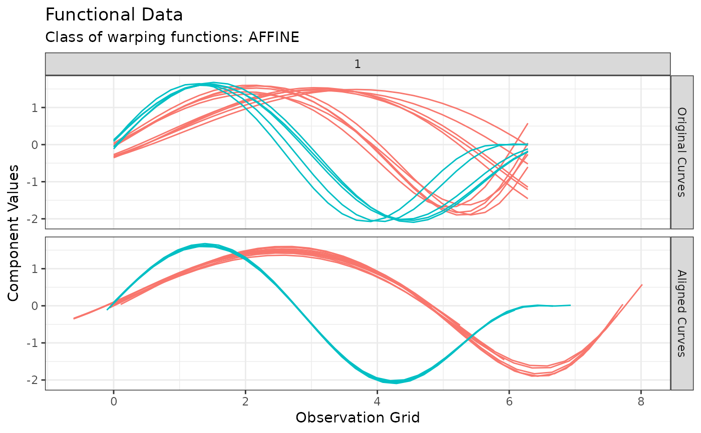

Performs k-means clustering for functional data with amplitude and phase separation
Source:R/fdakmeans.R
fdakmeans.RdThis function provides implementations of the k-means clustering algorithm for functional data, with possible joint amplitude and phase separation. A number of warping class are implemented to achieve this separation.
Usage
fdakmeans(
x,
y = NULL,
n_clusters = 1L,
seeds = NULL,
seeding_strategy = c("kmeans++", "exhaustive-kmeans++", "exhaustive", "hclust"),
is_domain_interval = FALSE,
transformation = c("identity", "srsf"),
warping_class = c("none", "shift", "dilation", "affine", "bpd"),
centroid_type = "mean",
metric = c("l2", "normalized_l2", "pearson"),
cluster_on_phase = FALSE,
use_verbose = FALSE,
warping_options = c(0.15, 0.15),
maximum_number_of_iterations = 100L,
number_of_threads = 1L,
parallel_method = 0L,
distance_relative_tolerance = 0.001,
use_fence = FALSE,
check_total_dissimilarity = TRUE,
compute_overall_center = FALSE,
add_silhouettes = TRUE
)Arguments
- x
A numeric vector of length \(M\) or a numeric matrix of shape \(N \times M\) or an object of class
funData::funData. If a numeric vector or matrix, it specifies the grid(s) of size \(M\) on which each of the \(N\) curves have been observed. If an object of classfunData::funData, it contains the whole functional data set and theyargument is not used.- y
Either a numeric matrix of shape \(N \times M\) or a numeric array of shape \(N \times L \times M\) or an object of class
fda::fd. If a numeric matrix or array, it specifies the \(N\)-sample of \(L\)-dimensional curves observed on grids of size \(M\). If an object of classfda::fd, it contains all the necessary information about the functional data set to be able to evaluate it on user-defined grids.- n_clusters
An integer value specifying the number of clusters. Defaults to
1L.- seeds
An integer value or vector specifying the indices of the initial centroids. If an integer vector, it is interpreted as the indices of the intial centroids and should therefore be of length
n_clusters. If an integer value, it is interpreted as the index of the first initial centroid and subsequent centroids are chosen according to the k-means++ strategy. It can beNULLin which case the argumentseeding_strategyis used to automatically provide suitable indices. Defaults toNULL.- seeding_strategy
A character string specifying the strategy for choosing the initial centroids in case the argument
seedsis set toNULL. Choices are"kmeans++","exhaustive-kmeans++"which performs an exhaustive search over the choice of the first centroid,"exhaustive"which tries on all combinations of initial centroids or"hclust"which first performs hierarchical clustering using Ward's linkage criterion to identify initial centroids. Defaults to"kmeans++", which is the fastest strategy.- is_domain_interval
A boolean specifying whether the sample of curves is defined on a fixed interval. Defaults to
FALSE.- transformation
A string specifying the transformation to apply to the original sample of curves. Choices are no transformation (
transformation = "identity") or square-root slope functiontransformation = "srsf". Defaults to"identity".- warping_class
A string specifying the class of warping functions. Choices are no warping (
warping_class = "none"), shifty = x + b(warping_class = "shift"), dilationy = ax(warping_class = "dilation"), affiney = ax + b(warping_class = "affine") or boundary-preserving diffeomorphism (warping_class = "bpd"). Defaults to"none".- centroid_type
A string specifying the type of centroid to compute. Choices are
"mean","median""medoid","lowess"or"poly". Defaults to"mean". If LOWESS appproximation is chosen, the user can append an integer between 0 and 100 as in"lowess20". This number will be used as the smoother span. This gives the proportion of points in the plot which influence the smooth at each value. Larger values give more smoothness. The default value is 10%. If polynomial approximation is chosen, the user can append an positive integer as in"poly3". This number will be used as the degree of the polynomial model. The default value is4L.- metric
A string specifying the metric used to compare curves. Choices are
"l2","normalized_l2"or"pearson". Iftransformation == "srsf", the metric must be"l2"because the SRSF transform maps absolutely continuous functions to square-integrable functions. Iftransformation == "identity"andwarping_classis eitherdilationoraffine, the metric cab be either"normalized_l2"or"pearson". The L2 distance is indeed not dilation-invariant or affine-invariant. The metric can also be"l2"ifwarping_class == "shift". Defaults to"l2".- cluster_on_phase
A boolean specifying whether clustering should be based on phase variation or amplitude variation. Defaults to
FALSEwhich implies amplitude variation.- use_verbose
A boolean specifying whether the algorithm should output details of the steps to the console. Defaults to
FALSE.- warping_options
A numeric vector supplied as a helper to the chosen
warping_classto decide on warping parameter bounds. This is used only whenwarping_class != "srsf".- maximum_number_of_iterations
An integer specifying the maximum number of iterations before the algorithm stops if no other convergence criterion was met. Defaults to
100L.- number_of_threads
An integer value specifying the number of threads used for parallelization. Defaults to
1L. This is used only whenwarping_class != "srsf".- parallel_method
An integer value specifying the type of desired parallelization for template computation, If
0L, templates are computed in parallel. If1L, parallelization occurs within a single template computation (only for the medoid method as of now). Defaults to0L. This is used only whenwarping_class != "srsf".- distance_relative_tolerance
A numeric value specifying a relative tolerance on the distance update between two iterations. If all observations have not sufficiently improved in that sense, the algorithm stops. Defaults to
1e-3. This is used only whenwarping_class != "srsf".- use_fence
A boolean specifying whether the fence algorithm should be used to robustify the algorithm against outliers. Defaults to
FALSE. This is used only whenwarping_class != "srsf".- check_total_dissimilarity
A boolean specifying whether an additional stopping criterion based on improvement of the total dissimilarity should be used. Defaults to
TRUE. This is used only whenwarping_class != "srsf".- compute_overall_center
A boolean specifying whether the overall center should be also computed. Defaults to
FALSE. This is used only whenwarping_class != "srsf".- add_silhouettes
A boolean specifying whether silhouette values should be computed for each observation for internal validation of the clustering structure. Defaults to
TRUE.
Value
An object of class caps.
Examples
#----------------------------------
# Extracts 15 out of the 30 simulated curves in `simulated30_sub` data set
idx <- c(1:5, 11:15, 21:25)
x <- simulated30_sub$x[idx, ]
y <- simulated30_sub$y[idx, , ]
#----------------------------------
# Runs a k-means clustering with affine alignment, searching for 2 clusters
out <- fdakmeans(
x = x,
y = y,
n_clusters = 2,
warping_class = "affine",
metric = "normalized_l2"
)
#----------------------------------
# Then visualize the results
# Either with ggplot2 via ggplot2::autoplot(out)
# or using graphics::plot()
# You can visualize the original and aligned curves with:
plot(out, type = "amplitude")

# Or the estimated warping functions with:
plot(out, type = "phase")